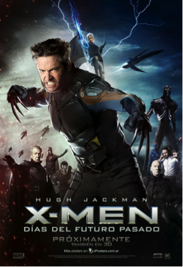
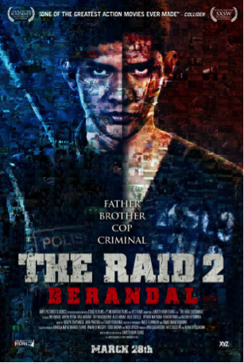
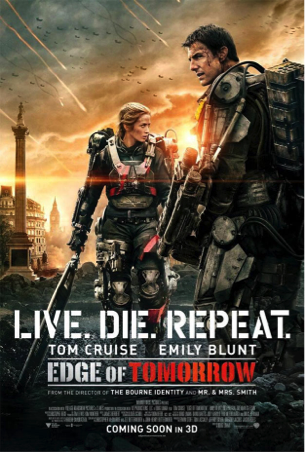

Si aún no viste alguno de los filmes que integran este Top 5, te recomendamos que te pongas al día.
Antes de que comiencen a “rankearse” las mejores películas del 2014, el portal Muycine.com realizó una lista con los 5 filmes mejores de la primera mitad del año. Si no tienes planes para este fin de semana frío, y no viste alguno de estos títulos, esta es una excelente oportunidad para que los conozcas.
La películas en la lista están enumeradas desde el primer lugar en adelante en el siguiente orden:
| El Grand Hotel Budapest | |
|
La crítica opina: “Típicamente distinguida pero engañosamente amable, The Grand Budapest Hotel nos trae a Wes Anderson nuevamente utilizando decorados escenarios visuales para explorar ideas profundamente emocionales”. La película dirigida por Wes Anderson relata las aventuras de Gustave H -legendario conserje de un famoso hotel de la Europa de entreguerras-, y de Zero Moustafa -el botones del mismo hotel- quienes guardan una amistad entrañable. |
| Lego, la película | |
|
La crítica opina: “Asombrosa y bella animación, un encantador elenco de voces, gags que despiertan la risa a cada minuto y una historia sorprendentemente delineada, The Lego Movie es entretenimiento de calidad para todas las edades”. El film protagonizado por Chris Pratt, Will Ferrell, Elizabeth Banks y Will Arnett muestra la vida de un trabajador ordinario de la construcción Lego que es reclutado para unirse a una misión que busca detener a un malvado villano con propósitos de inmovilizar a todo el universo Lego. |
|  | X-Men: Días del futuro pasado |
|
La crítica opina: “X-Men: Days of FuturePast combina los mejores elementos de toda la serie para producir una satisfactoria entrega de gran ritmo, que se ubica entre las mejores películas de la franquicia”. La cuarta secuela dirigida por Bryan Singer muestra cómo los X-Men envían a Wolverine al pasado en un esfuerzo por cambiar la historia y prevenir los acontecimientos que derivarían en la aniquilación de humanos y mutantes. |
|  | La redada 2: Berandal |
|
La crítica opina: “Si bien la dinámica trama y la violencia desmedida pueden ser elementos que cautiven solamente a los más fanáticos del género, The Raid 2 definitivamente entrega una buena dosis de todo lo que a la audiencia le gustó de la primera película”. El film dirigido por Gareth Evans sigue la historia de Rama, quien poco tiempo después de la redada de la primera película, comienza a trabajar de encubierto infiltrado en la mafia de Jakarta, con la finalidad de desbaratar la organización y exponer la corrupción policial vinculada. |
|  | Al filo del mañana |
|
La crítica opina: “Fascinante, bien actuada, entretenida e inteligente, Edge of Tomorrow ofrece una evidente demostración de que Tom Cruise todavía puede ponerse sobre sus hombros todo el peso de un gran blockbuster de acción”. La película que tiene por protagonistas a Tom Cruise y Emily Blunt relata la historia de un oficial militar que se está obligado a librar una batalla continua contra una raza alienígena. Este soldado va desarrollando sus habilidades, y gracias a su unión con un soldado de las fuerzas especiales, estará cada vez más cerca de derrotar a su enemigo. |